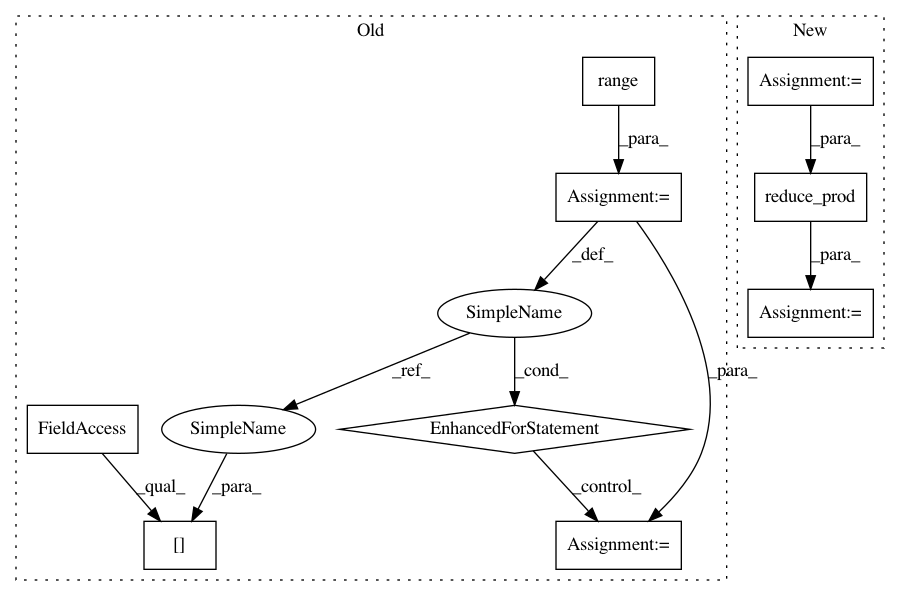

a39084b995d9d6d88300632c54895488985e5cfd,onnx_tf/backend.py,TensorflowBackend,handle_flatten,#Any#Any#Any#,237
Before Change
axis = node.attrs["axis"] if "axis" in node.attrs.keys() else 1
x_direction = 1;
y_direction = 1;
for i in range(axis):
x_direction = x_direction * tensor.shape[i]
for i in range(axis, tensor.shape.length):
y_direction = y_direction * tensor.shape[i]
shape = tf.constant([x_direction, y_direction])
return [tf.reshape(tensor, shape)]
After Change
axis = node.attrs["axis"] if "axis" in node.attrs.keys() else 1
shape = tf.shape(tensor)
split0, split1 = tf.split(shape, [axis, tf.size(shape) - axis])
split0 = tf.reduce_prod(split0)
split1 = tf.reduce_prod(split1)
output_shape = tf.stack([split0, split1])
return [tf.reshape(tensor, output_shape)]
In pattern: SUPERPATTERN
Frequency: 3
Non-data size: 9
Instances
Project Name: onnx/onnx-tensorflow
Commit Name: a39084b995d9d6d88300632c54895488985e5cfd
Time: 2017-10-24
Author: gbercea@gheorghodorsmbp.watson.ibm.com
File Name: onnx_tf/backend.py
Class Name: TensorflowBackend
Method Name: handle_flatten
Project Name: onnx/onnx-tensorflow
Commit Name: a39084b995d9d6d88300632c54895488985e5cfd
Time: 2017-10-24
Author: gbercea@gheorghodorsmbp.watson.ibm.com
File Name: onnx_tf/backend.py
Class Name: TensorflowBackend
Method Name: handle_flatten
Project Name: Bihaqo/t3f
Commit Name: 330154d9f5344f0a6ab39b3a313626c4b574dbbd
Time: 2017-02-11
Author: izmailovpavel@gmail.com
File Name: kronecker.py
Class Name:
Method Name: determinant
Project Name: Bihaqo/t3f
Commit Name: 40db92599e7607b97f5b52a4d6a90bef9612c317
Time: 2017-02-11
Author: izmailovpavel@gmail.com
File Name: kronecker.py
Class Name:
Method Name: slog_determinant